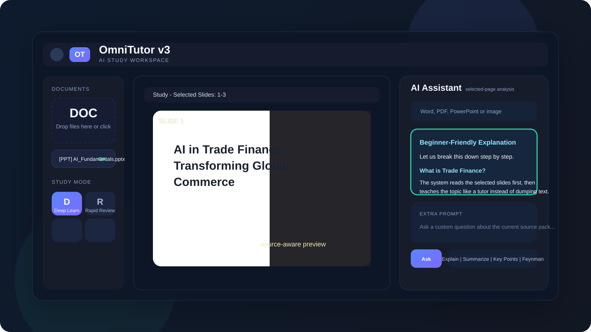
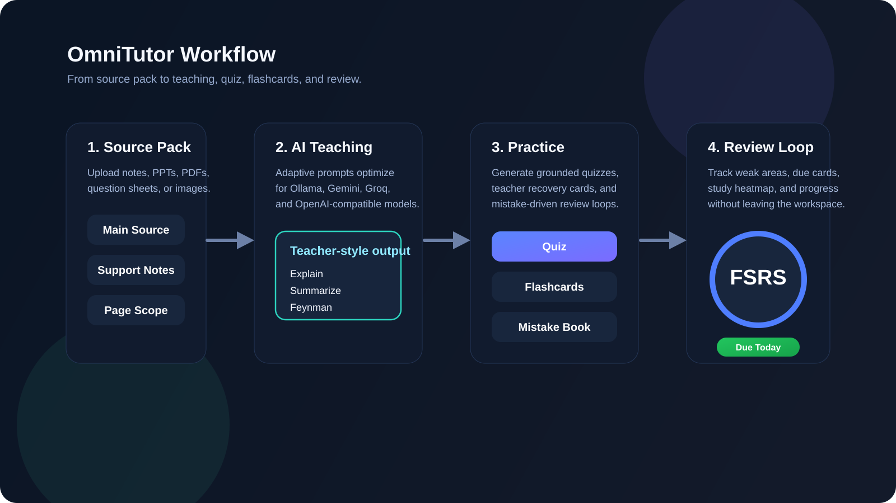

Grounded AI study that actually follows your sources.
OmniTutor v3 combines source-aware chat, selected-page study, teacher question packs, quizzes, flashcards, recovery review, and multi-provider AI in one workspace. Upload your own PDFs, PowerPoints, DOCX notes, or question sheets and keep the learning loop anchored to the material you chose.

What OmniTutor does
NotebookLM-style grounded explanations, teacher-question workflows, Anki-inspired review loops, and source-pack study controls without locking you to a paid hosted model.
Source-aware chat and study
Use selected documents, support notes, and chosen page ranges so the AI explains only from the source pack you built.
Teacher question packs
Upload DOCX, PDF, image, or PPT/PPTX question sheets. OmniTutor splits the questions, teaches the logic, checks your answer, and stores mistakes.
Quizzes, flashcards, and recovery
Generate grounded quizzes and flashcards, then review weak areas through due cards, recovery decks, and mistake-driven practice.
How the workflow fits together
Source pack first. Then teaching. Then practice. Then review. That keeps the product simple and keeps the AI aligned with your actual study material.

Pick your source pack
Choose one main source, add support notes, and narrow the visible pages or slides before asking the AI anything.
Learn like a tutor session
Explain, summarize, ask for key points, or use the Feynman style. The model adapts prompts to Ollama, Gemini, Groq, and compatible providers.
Practice with grounded outputs
Build quizzes and flashcards from the same source pack. Mistakes go into the mistake book and recovery review flow.
Review what still needs work
Track due cards, weak areas, and the next best action so study time turns into a repeatable loop.
Run it locally
- Clone the repo from github.com/DommLee/study_app.
- Install dependencies with
npm install. - Copy
.env.exampleto.envif you want env-based settings. - Start the backend with
npm start. - Open
http://localhost:3030.
GitHub Pages note
- This Pages site is a static showcase and setup guide.
- The full OmniTutor app requires the Node backend for uploads, OCR, indexing, question extraction, and AI routing.
- GitHub Pages can host the public project site, but not the full backend app.
- A GitHub Actions workflow is included to publish the static
docs/site.
Built by Abdullah Yildiz
OmniTutor v3 is maintained and designed by Abdullah Yildiz, also known online as DommLee. The project focuses on grounded AI study workflows, teacher-question solving, and local-first flexibility.